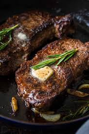

Back to Recipes
Steak

Description
Steak is a popular dish made from beef, known for its rich flavor and tender texture. It can be grilled, pan-seared, or broiled, and is often served with various sides.
Ingredients
- 2 ribeye steaks
- Salt and pepper to taste
- 2 tablespoons olive oil
- 2 cloves garlic, minced
- Fresh rosemary or thyme (optional)
- Butter (for basting)
- Lemon wedges (for serving)
Instructions
- Remove the steaks from the refrigerator and let them come to room temperature for about 30 minutes.
- Season both sides of the steaks generously with salt and pepper.
- Heat olive oil in a skillet over high heat until it shimmers.
- Add the steaks to the skillet and sear for 3-4 minutes on each side for medium-rare, or longer for desired doneness.
- Add minced garlic and herbs to the skillet, and baste the steaks with melted butter for extra flavor.
- Remove from heat and let the steaks rest for 5-10 minutes before slicing.
- Serve with lemon wedges on the side.